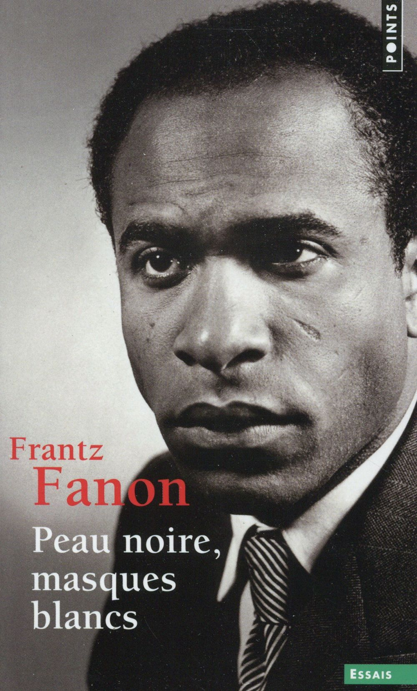

Où loge la maladie coloniale : dans le colonisé, ou dans la relation ?
Au module précédent, Bennabi cherchait le mal au-dedans, du côté de la colonisabilité. Fanon fait le geste symétrique. Lui aussi est un homme du diagnostic, mais il braque son regard clinique au-dehors : la maladie du colonisé loge dans la relation coloniale elle-même. La charge de la preuve change de camp.

Le livre où Fanon forge l’outil qui commande tout le reste : la sociogénie. Sous le regard colonial, l’homme noir est sommé d’endosser un masque blanc pour exister.
« À côté de la phylogénie et de l’ontogénie, il y a la sociogénie. En un sens, disons qu’il s’agit ici d’un sociodiagnostic. »
Certaines souffrances viennent de la structure sociale elle-même, de la place qu’une société assigne à un homme, avant toute biologie.
l’histoire de l’espèce.
celle de l’individu, de son enfance.
la place qu’une société assigne à un homme.
L’objet ausculté devient la société.
L’infériorité du Maghrébin tenue pour une donnée de nature, gravée dans le cerveau. Le primitivisme cérébral en fait un diagnostic médical.
Ce que Porot appelle une nature, il le rebaptise effet de situation. L’impulsivité qu’on prête au colonisé est la réponse à un monde qui l’écrase.
Le déplacement fait passer la question de la biologie au pouvoir : une infériorité produite par une structure peut être défaite en défaisant la structure.
« S’il y a complexe d’infériorité, c’est à la suite d’un double processus : économique d’abord, par intériorisation ou, mieux, épidermisation de cette infériorité. »
De l’hôpital de Blida au combat, la guerre fait passer Fanon du soin au politique.
À Blida affluent deux catégories de patients qui se croisent : des militants brisés par la torture, et des tortionnaires que leur propre violence détruit. Fanon soigne les deux, et sa position devient intenable. Il démissionne de son plein gré, sans être révoqué comme le dit parfois la légende, par une lettre au ministre-résident Robert Lacoste.
Expulsé au début de l’année, il rejoint le Front de libération nationale et s’installe à Tunis.
Aux Damnés de la terre, l’objet ausculté change d’échelle : Fanon examine la relation coloniale elle-même, et le langage qui la soutient.
« Ce monde compartimenté, ce monde coupé en deux, est habité par des espèces différentes. » Deux villes, deux humanités, et entre elles une frontière tenue par la seule force nue.
« Le langage du colon, quand il parle du colonisé, est un langage zoologique. » Horde, grouillement, pullulement : le bestiaire appliqué à des hommes, pour pouvoir les tenir sans remords.
L’analyse confirme cliniquement ce que Césaire appelait, au tout premier module, la chosification. L’épidermisation, c’est la manière dont cette chose finit par se vivre comme diminuée.
Dans un monde où le colonisé est un objet, qu’est-ce qui peut le refaire sujet ?
Il se ressaisit en reprenant ce qu’on lui avait confisqué : la capacité d’agir sur le rapport de force. Cette violence est désaliénante, elle défait l’intériorisation de l’infériorité, et l’homme qui était une chose se redresse en acteur de son histoire.
Dans toute société, quelqu’un détient le monopole de la violence légitime. Dans la colonie, il appartient à l’occupant : c’est lui que la lutte de libération vient briser. Une fonction politique, à mille lieues de l’éloge du sang qu’on lui a prêté.
Cette distinction se joue dans un débat entre trois noms.
La violence de libération comme moyen : l’acte par lequel un homme rendu objet se ressaisit comme sujet. Une fonction politique, à distance de l’éloge du sang qu’on lui a prêté.
Dans sa préface, il va plus loin que Fanon : la violence devient une valeur, presque une rédemption métaphysique. C’est ce texte incandescent qui a fait lire Fanon comme un prophète du sang.
Elle sépare la violence moyen, justifiable par son but, et la violence valeur, fin en soi. Sa critique vise Sartre. Elle sert à lire Fanon avec justesse.
Le dernier chapitre des Damnés de la terre s’intitule « Guerre coloniale et troubles mentaux ». Fanon, redevenu psychiatre, y aligne des cas cliniques recueillis pendant la guerre : des hommes que la torture a brisés, des deux côtés de la ligne.
Une impulsivité criminelle tenue pour une nature, gravée dans le cerveau du Nord-Africain.
La même violence, replacée dans son histoire : fabriquée par la guerre coloniale.
Il y inclut une section qui répond mot pour mot à la science trouvée à Blida en arrivant : « De l’impulsivité criminelle du Nord-Africain à la guerre de libération nationale ». Le dossier que Porot croyait clos, Fanon le referme.
Il meurt le 6 décembre 1961, d’une leucémie, dans une clinique du Maryland où il était parti se faire soigner trop tard. Il est inhumé en Algérie, sur la terre du combat qu’il avait fait sien.
Il prévient déjà contre l’après : les bourgeoisies nationales risquent de prendre la place du colon en laissant la structure intacte. Celui qu’on accuse d’ivresse révolutionnaire est le plus lucide sur les trahisons de la révolution.
À côté de la nature et de la biographie, un troisième terme : la structure sociale. L’infériorité passe du registre de la nature à celui du pouvoir.
La domination s’inscrit dans la peau et se vit comme un soi diminué.
Dans un monde tenu par la force nue, la libération reprend un monopole confisqué. Arendt distingue ce que Fanon justifie comme moyen de ce que Sartre glorifie comme valeur.